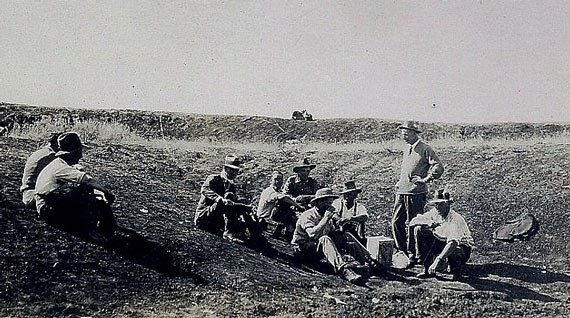

The Great EMU WAR

There has never been a greater cause of despair than the Great Emu War of '32. During the faithful month of October, the Emu Republic seized half the fertile territory of Western Australia, with a force that outnumbered Australia 3000 to 1.
The invading force consumed and destroyed vast amounts of farming land, from a country that was already suffering from World War I. Its people starving, Australia had no choice but to declare war - a choice they ultimately regretted.

After the conclusion of World War I, soldiers returned home and took up the life of farmers, wishing only to know a peaceful and simple life. Now no longer soldiers, they served their country in a different capacity - they produced wheat.
Australia was in the early stages of the Great Depression, and many people were suffering. The wheat provided by the farmers was desperately needed by the Australian people. The ex-soldiers worked hard to provide for them, and for a little while, it seemed as if Australia would pull through - but they were unaware of the threat that loomed near.
The Emu Republic, whom Australia had maintained a tentative peace with, had always coveted the fertile soil upon which these farms were built. Their leader, Lord High Emu, was a cunning and vicious bird. He showed no mercy, striking when Australia was at its weakest.
The invasion happened on the 21st of October, 1932. At the break of dawn, a battalion of 20,000 emu warriors attacked the farming outposts of Chandler and Walgoolan. They faced no resistance, seizing the land with ease. The emu battalion was a greedy and merciless foe. They consumed a great number of crops, destroying the rest out of spite.

The desperate farmers, who had only just escaped the terrors of war, were now facing another menace. Knowing that they were desperately outnumbered, they were forced to leave their homes and seek the help of the Minister for Defence, Sir George Pearce.
The farmers were still soldiers at heart. They knew that the only way to defeat this foe was with the best military power Australia had to offer. When they met Sir George Pearce, they urged the Minister to send trained military personnel with machine guns. The Minister agreed, and began forming a fighting force immediately.
The Australian Anti-Emu Defense Force (AEDF) was formed. It was headed by 3 elite members: Sergeant S. McMurray, Gunner J. O'Hallora, and their commander Major GPW Meredith of the Seventh Heavy Battery of the Royal Australian Artillery. Each was armed with a Lewis gun and 10,000 rounds of ammunition.
The AEDF planned to assault the emu battalion on the 27th of October, 1932. But Lord High Emu was no fowl. On the day of the planned attack, his army scattered under the cover of rain, causing the AEDF to withdraw.
The AEDF realized they could not attack head-on. Changing their strategy, they hunted a scouting group of 50 emu warriors and engaged them in battle. The birds were tactical and split into small groups so that they were difficult to target. The AEDF managed to kill several emus, but at a high cost of ammunition.
On the 4th of November, the AEDF set up an ambush spot by a local dam. The Lord High discovered their location, sending 1000 of his warriors. They barely managed to defeat 12 emus before being forced to retreat.
Despite all the efforts of the AEDF, they were unable to stop the Emu Republic. Any attempt at a full-scale attack was thwarted. Any attempt at an ambush was swarmed. Any emu warriors they killed were replaced by two more. The forces behind the Emu Republic were relentless and unending.
"Each mob has its leader, always an enormous black-plumed bird standing fully six-feet high, who keeps watch while his fellows carry out their work of destruction."
-- Unnamed Recruit

The Lord High Emu turned the people against Australia, locally and abroad. Conservationists in the United Kingdom protested the war, calling it an "extermination of the rare emu". Dominic Serventy and Hubert Whittel, eminent Australian ornithologists, described the war as "an attempt at the mass destruction of the birds".
Others, for some reason (perhaps due to pro-emu propaganda), didn't take the threat seriously. The Minister for Defence was ridiculed and mocked by the very citizens he was trying to save.
It didn't take long for politicians to react to the outcry. The House of Representatives publicly shamed the Minister for Defence for his failure. Pearce withdrew the AEDF on the 8th of November, 1932.
Without the AEDF, the emus ran amok. More and more invaded by the thousands, taking everything the farmers held dear.
Pearce, realizing his grave mistake in giving to the whims of the House of Representatives, fought back and convinced them to redeploy the AEDF. Major Meredith was once again fighting the emu menace.
"When one New South Wales state Labor politician enquired whether ‘a medal was to be struck for those taking part in this war’, his federal counterpart in Western Australia, responded that they should rightly go to the emus who ‘have won every round so far’.”
-- Murray Johnson, Journal of Australian Studies